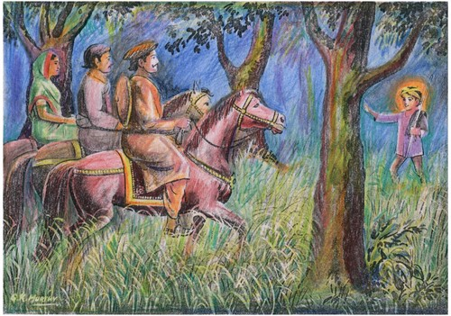

RAJARAM MAHARAJ
Bhaktya mambhijanati yavat yashchasmi tatvatah |
tato mam tatvato dnyatva vishate tadanantaram ||

tato mam tatvato dnyatva vishate tadanantaram ||
There is a small village on the banks of River Godavari near Vaijapr ( Aurangabad District in Maharashtra state ) named as Babulgaon. There a great saint Rajaram Maharaj took birth in a Rajput family. Since his childhood, he was enthusiastic and brilliant. One day in his school when he heard the story of Dhruva, he felt very sorry. “At the age of five, Dhruva got the salvation and darshana of the almighty God . I am 8 years old and I am nothing in front of him.” Since then he was in search of the almighty God. He was very eager to see the almighty and daily he was thinking the only thing through out the day and night. Mean while days and years passed. Rajaram became young.
One day a sadhu met him and told that he should not worry. He would get the darshana of ShriKrishna. After some days he went to Husengabad to see the king of that time where he was revered a Sardar of 500 horses but Rajaram was not happy with. During the time a Brahmin, Krishnabhatta who was planning to go to Kasi, came in contact with Rajaram. Krishnabhatta also told about Shri. Chidambara Mahaswamiji to Rajaram. On the same day Rajaram set for darshana of Shri. Chidambara Mahaswamiji along with his brother Nimbaji Kishnabhatta.
At night in a jungle they lost the way and entered into a deep jungle having large trees. They confused and little frightened with that new place. Shri. Chidambara Mahaswamiji came there in the incarnation of an eight year old child, having a stick in his hand and a shall on shoulder. These three people saw the little boy and come to him and asked him that who he was and why he was there in jungle at that time. The boy answered that he worked there to show the right path to those who lost their way in that jungle. He said, “Many people forget the way. You come with me. I will show the way.” For some time he walked with them showing the way. When they approached to a good road, he disappeared. That road approached to Kundagol village.
From that time Shri. Chidambara Mahaswamiji is living there. On enquiry, these three people came to know the truth and were very happy to see Shri. Chidambara Mahaswamiji. All of them went there for darshana of Shri. Chidambara Mahaswamiji and stood in the queue. Rajaram decided not to take any food until Shri. Chidambara Mahaswamiji’s darshana. Three days passed for his turn to come for darshana. On the fourth night, Shri. Chidambara Mahaswamiji came in his dream and told to leave such bhakti, a simple devotion (bhakti) is required and gave him the coconut with sugar and told the ‘Tarak Mantra’ in the right ear of Rajaram and also told that the almighty in whose search Rajaram was, is Shri. Chidambara Mahaswamiji only.
At that time due to lighting stroke, Rajaram closed his eyes. Then Shri. Chidambara Mahaswamiji took a simple from of a Brahmin and asked him to come for darshana in the morning. Rajaram awakened from the sleep and remembered the dream and felt that even though he had not taken meals, he has eaten. Also he experienced a serene peace and calmness. Soon he went to the place where Shri. Chidambara Mahaswamiji was. Shri. Chidambara Mahaswamiji was in a sabha with disciples. Shri. Chidambara Mahaswamiji stood up and told that a beloved disciple was coming to him. Let us see him and walked towords the gate. At the same time Rajaram was near to them and prostrated. Shri. Chidambara Mahaswamiji hugged him. All the disciples who were witnessing the event, were surprised.
Shri. Chidambara Mahaswamiji enquired Rajaram what he wanted. Rajaram told he would ask it in a place where nobody was present. Shri. Chidambara Mahaswamiji took him in a room and asked him to be free from all doubts. He further said, “I know that you are the great disciple,” Rajaram said, “Mahaswamiji, Iwant nothing. I want devotion only.” And Shri. Chidambara Mahaswamiji showed him the vishwatmak roop of Lord Shrikrishna, so that all of his confusion was removed. With the darshana of Shrikrishna, Rajaram forgot his Self-being. He heard that there is no difference between Shiva and Vishnu. The nine dnyanagas i.e. vairagya in kama, indriya nigraha, tolerance of confusion (dwandwas), faith in the words of Guru, Ahankara tyaga, Dhruda Abhyas, Satsamagama, wining of prana,, vasanakshaya. After this the words of Guru only help you to attain salvation i.e. dnyana with moksha.
After this Shri. Chidambara Mahaswamiji put a hand on his head and put some vibhooti in his mouth. Rajaram got what he wanted or thought of and then he lived with Shri. Chidambara Mahaswamiji only. Latter on, he proved the world by writing 4,91,451 abhangas (devotional songs) on Shri. Chidambara Mahaswamiji which are still at Babhulgaon near Vaijapur (Aurangabad District). He is the Bhakta Shrestha.